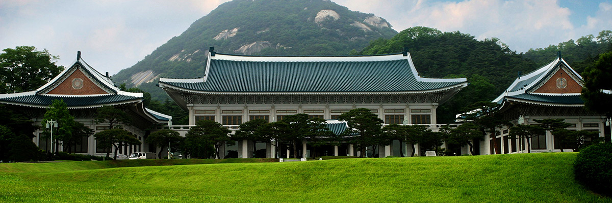
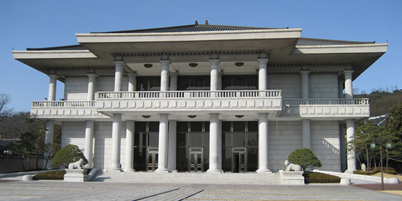
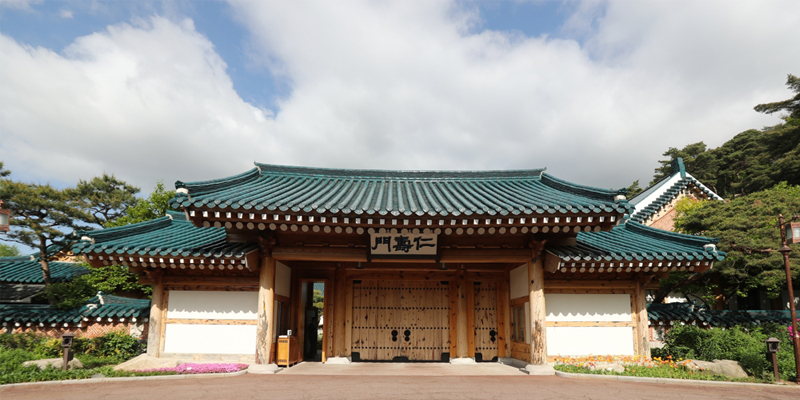
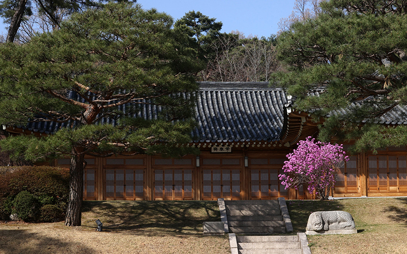
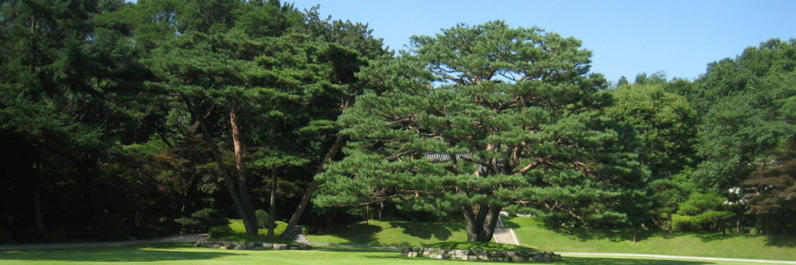

Main Office Building
The Main Office Building, the image of which represents Cheong Wa Dae today, was completed in 1991 and consists of a two-story central building flanked by two single-story wings. The structural design is based on traditional wood construction methods and Korean palace architectural style, while the interior projects a modern feel and boasts the latest facilities. The roof is covered by 150,000 Korean-style blue tiles crafted to last for a century or more.Inside are various rooms dedicated to specific functions such as the President's Office Sejong Room, where cabinet meetings are held and Jiphyeon Room, where summit talks are convened. The sprawling lawn in front of the Main Office Building is called the Grand Garden and used for outdoor events.
State Guest House
Completed in December 1978, this is the venue for hosting official events that involve foreign guests and for holding large meetings. The structure is supported by eighteen stone pillars, which impart a stately appearance, while the interior is decorated with Rose of Sharon (national flower), laurel, and Taegeuk (the yin and yang symbol of the universe) motifs. The first floor serves as a reception room and the second floor is a dining area.


Official Residence
The First Family lives in this compound, completed in 1990 to separate the President’s working and living areas. Within these walls are a main building, detached reception hall, traditional garden, and detached sarangchae (men’s quarters). The structures feature traditional hipped-and-gabled roofs, and the signboard over the main entrance reads Insumun(Gate of Benevolence and Longevity).
Sangchunjae
Completed in April 1983, this traditional Korean-style structure is used for receiving foreign guests and holding unofficial meetings. It was built with wood from upright Korean red pine trees (Pinus densiflora) more than 200 years old. Inside facilities include a room with an ondol (traditional under-floor heating) system, spacious wooden-floored hall, and kitchen. Outside, royal azaleas bloom in spring, while persimmons and quinces ripen in autumn to provide a beautiful Koreanesque scene.

Yeomingwan
The offices of the Presidential Secretariat are collectively called Yeomingwan and occupy three buildings. The name comes from the phrase Yeomin gorak Share the people’s hardships and joys) and promises the Government will remain close to the citizenry through good times and bad. Solar panels have been installed on the outer walls of Building 3, supplying part of the electricity consumed on site.
Nokjiwon
Completed in 1968, this garden is populated by some 120 different tree species as well as commemorative trees planted by former Presidents. The 3,300 landscape has been planted with lawns for outdoor events. An umbrella pine symbolizing Nokjiwon is more than 160 years old and stands about 17m tall.
Chunchugwan
Chunchugwan is the Cheong Wa Dae press center, which can accommodate some 300 international and domestic journalists. The first floor has a journalist room and small briefing room, while a large briefing room is on the second floor. “Chunchugwan” originates from the Chinese classic Chunqiu (Spring and Autumn Annals), traditionally regarded as having been compiled by Confucius himself. The name suggests that the historical record will be strictly kept.
